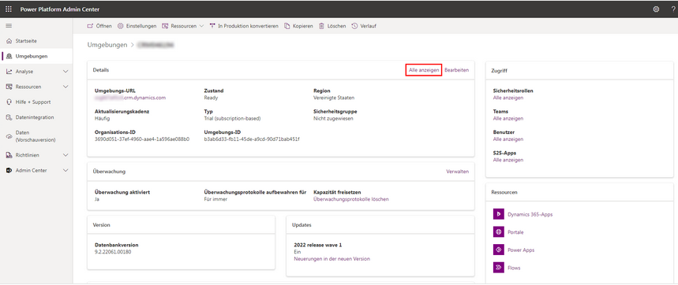
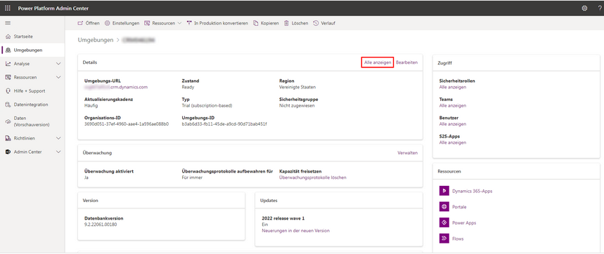

Umgebungsdetails
Im Power Platform Admin Center können Sie Details zu Ihren Umgebungen einsehen. Wenn Sie eine Umgebung auswählen, können Sie spezifische Informationen zu dieser Umgebung anzeigen.
 

Wählen Sie Bearbeiten aus, um Umgebungsdetails zu überprüfen und zu bearbeiten.